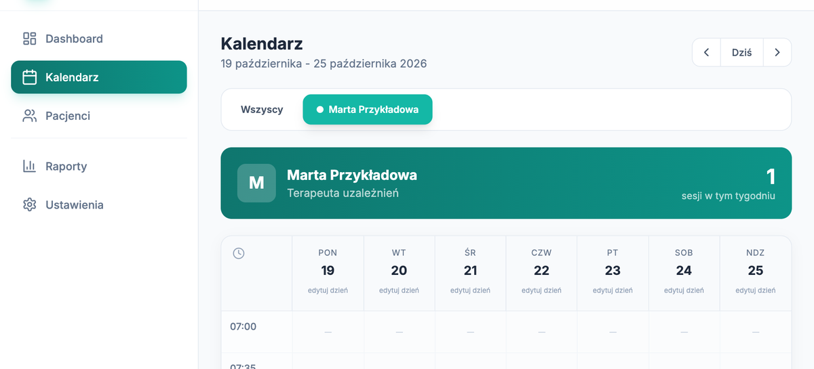
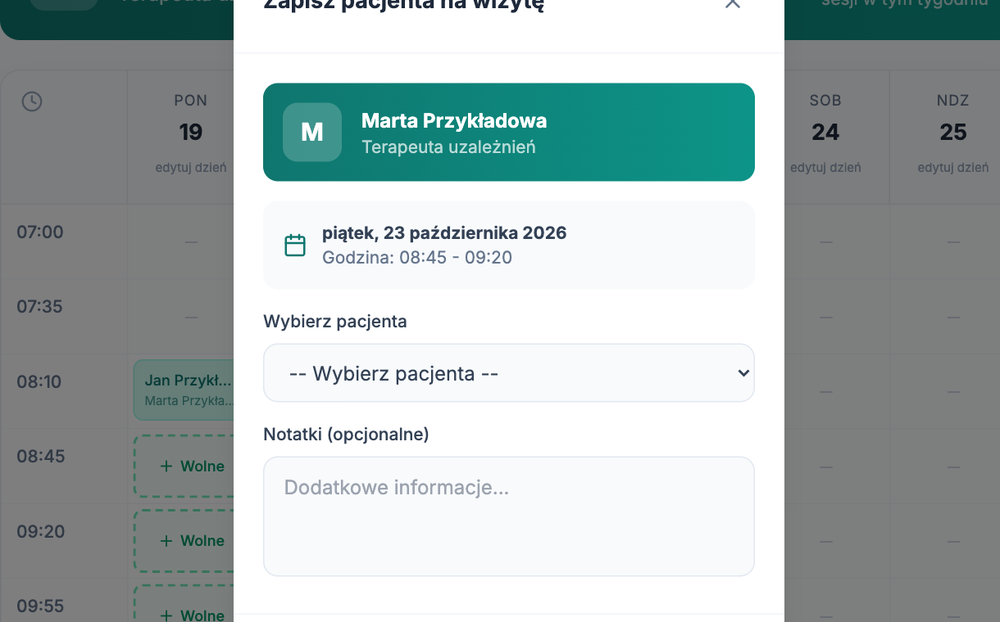
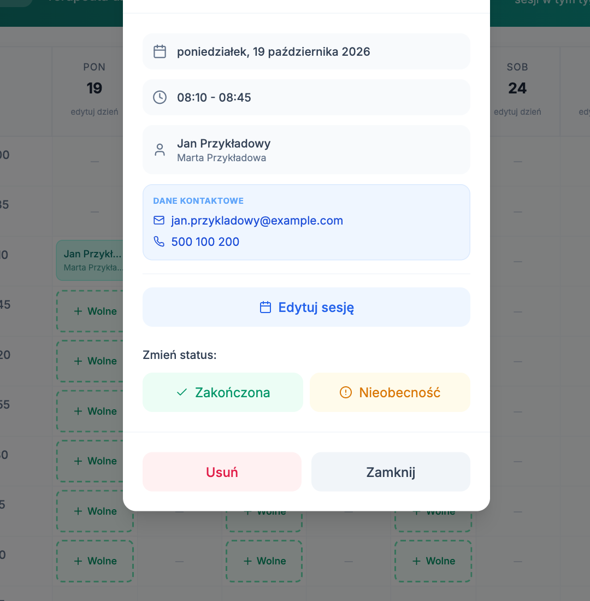
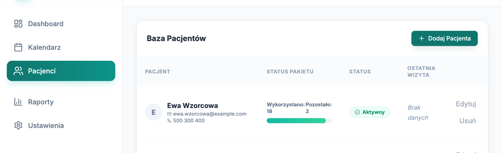
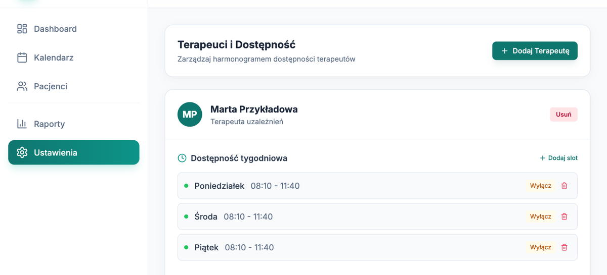
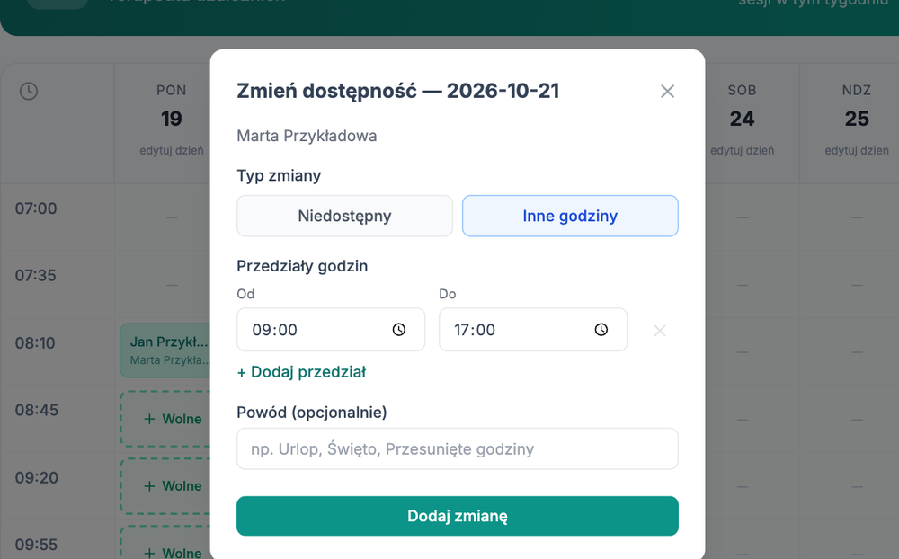

Dla terapeutów i administratorów. Kalendarz, wizyty, pacjenci i grafik.
mywaypoint.pl · stan na październik 2026
LogowanieAdres e-mail i hasło. Te same co dotąd.
TerapeutaWidzi swoje wizyty i bazę pacjentów. Może odwołać swoją wizytę.
AdministratorZapisuje pacjentów, zmienia wizyty, prowadzi grafik.
1. Kto co może
Czynność
Pacjent
Terapeuta
Administrator
Podgląd kalendarza
tak, swoje wizyty
tak, swoje wizyty
tak, wszystkie
Rezerwacja wizyty
tak, dla siebie
nie
tak, dla każdego pacjenta
Odwołanie zaplanowanej wizyty
tak, swojej
tak, swojej
tak
Zmiana terminu i statusu wizyty
nie
nie
tak
Baza pacjentów
nie
tylko odczyt
odczyt i zmiany
Raporty i Ustawienia (grafik)
nie
nie
tak
Rolę nadaje administrator systemu. Jeśli po zalogowaniu nie widzisz pozycji, której potrzebujesz, zgłoś to administratorowi.
2. Logowanie
Otwórz mywaypoint.pl.
Wpisz adres e-mail i hasło. Kliknij Zaloguj się.
Nie pamiętasz hasła? Kliknij „Nie pamiętasz hasła?”, wpisz adres i kliknij Wyślij kod. Mail ma temat „Kod do rezerwacji MyWay”. Wpisz kod i nowe hasło.
Dane pacjentów są chronione. Nie udostępniaj hasła. Na wspólnym komputerze kliknij „Wyloguj” po pracy. System zapisuje, kto z zespołu otwierał dane pacjentów.
3. KalendarzGłówne miejsce pracy. Pokazuje jeden tydzień.

Kalendarz administratora po wyborze terapeuty
Strzałki i przycisk „Dziś” zmieniają tydzień.
„Wszyscy” pokazuje wizyty wszystkich terapeutów naraz.
Przycisk z nazwiskiem pokazuje grafik jednego terapeuty i jego wolne terminy.
Pole z nazwiskiem pacjenta to zarezerwowana wizyta. Kliknij je, żeby zobaczyć szczegóły.
Pole „+ Wolne” to wolny termin. Kreska oznacza, że terapeuta wtedy nie przyjmuje.
Terapeuta widzi w kalendarzu wizyty przypisane do siebie, razem z telefonem i adresem e-mail pacjenta.
4. Zapisanie pacjenta na wizytęAdministrator
W Kalendarzu kliknij przycisk z nazwiskiem terapeuty.
Kliknij pole + Wolne w wybranym dniu.
W polu „Wybierz pacjenta” wskaż pacjenta. Lista pokazuje, ile sesji mu zostało.
Dopisz notatkę, jeśli trzeba.
Kliknij Zapisz na wizytę.

Okno „Zapisz pacjenta na wizytę”
Zasady, których system pilnuje
Zasada
Pacjent
Administrator
Brak rezerwacji na datę z przeszłości
obowiązuje
obowiązuje
Rezerwacja najpóźniej 3 dni przed terminem
obowiązuje
nie obowiązuje
Jedna wizyta pacjenta w tygodniu
obowiązuje
obowiązuje
Wizyty tylko w ramach pakietu
obowiązuje
obowiązuje
Jeden pacjent u terapeuty o danej godzinie
obowiązuje
obowiązuje
5. Praca z wizytąKliknij wizytę w kalendarzu.
Okno „Szczegóły sesji” pokazuje dzień, godzinę, pacjenta, terapeutę i dane kontaktowe pacjenta.
Przycisk
Co robi
Edytuj sesję
Zmienia dzień, godzinę albo terapeutę.
Zakończona
Oznacza wizytę jako odbytą. Pacjentowi ubywa jedna sesja z pakietu.
Nieobecność
Oznacza, że pacjent nie przyszedł. Pakiet się nie zmienia.
Usuń
Usuwa wizytę. Termin wraca do puli. Tego nie da się cofnąć.
Te przyciski widzi tylko administrator. Terapeuta ma w tym oknie jeden przycisk: Odwołaj wizytę. Odwołuje nim swoją zaplanowaną wizytę. Pacjent i zespół dostają wtedy mail o odwołaniu.
Oznaczaj wizyty na bieżąco. Sesja schodzi z pakietu dopiero po statusie „Zakończona”. Bez tego licznik pacjenta i raporty pokazują nieprawdę.

Okno „Szczegóły sesji” u administratora
6. Automatyczne maile
System wysyła je sam. Nie trzeba nic ustawiać.
Zdarzenie
Do zespołu (terapia@osrodek-myway.pl)
Do pacjenta
Nowa rezerwacja
„Nowa rezerwacja”
„Potwierdzenie wizyty”
Zmiana dnia, godziny albo terapeuty
„Zmiana terminu”
„Zmiana terminu wizyty”
Odwołanie wizyty
„Odwołana wizyta”
„Wizyta odwołana”
Usunięcie wizyty
„Usunięta wizyta”
„Wizyta odwołana”
Pacjent dostaje maila tylko wtedy, gdy w jego danych jest adres e-mail.
7. Pacjenci

Baza pacjentów. Pasek pokazuje wykorzystane i pozostałe sesje.
Terapeuta przegląda listę. Zmiany wprowadza administrator.
Dodanie pacjenta
Kliknij Dodaj Pacjenta.
Wpisz imię i nazwisko, adres e-mail, telefon i liczbę sesji.
Kliknij Dodaj Pacjenta w oknie.
Adres e-mail jest kluczem. Pacjent musi założyć konto na ten sam adres, który wpisujesz tutaj. Inny adres oznacza komunikat „Twoje konto nie jest jeszcze aktywowane”.
Pacjenci z Pakietem 3 z CRM pojawiają się sami. Po przyjęciu w MyWay CRM pacjent trafia do bazy z pulą 20 konsultacji. Nie dodawaj go drugi raz.
Zmiana danych i pakietu
Kliknij Edytuj przy pacjencie. Możesz poprawić dane kontaktowe i liczbę pozostałych sesji. Przycisk „Usuń” usuwa pacjenta z bazy rezerwacji.
8. Grafik terapeutówAdministrator, zakładka Ustawienia

Ustawienia: stały grafik tygodniowy terapeuty
Stały grafik tygodniowy
Dodaj slot dodaje dzień tygodnia i godziny przyjęć.
Wyłącz wstrzymuje termin bez usuwania. Ikona kosza usuwa go na stałe.
Dodaj Terapeutę dodaje nową osobę do kalendarza.
Zmiana grafiku nie rusza wizyt, które są już zarezerwowane.
Zmiana jednego dnia: urlop, święto, inne godziny
W Kalendarzu kliknij przycisk z nazwiskiem terapeuty.
Pod datą kliknij edytuj dzień.
Wybierz Niedostępny albo Inne godziny. Przy innych godzinach podaj przedziały „Od” i „Do”.
Wpisz powód, jeśli chcesz. Kliknij Dodaj zmianę.

Okno „Zmień dostępność”
Wszystkie takie zmiany są w Ustawieniach, w części „Dostępność jednorazowa”.
9. RaportyAdministrator
Zakładka „Raporty” liczy wizyty w wybranym okresie: ten tydzień, ostatni tydzień, ten miesiąc, ostatni miesiąc, własny zakres albo wszystkie. Pokazuje wizyty zakończone, zaplanowane, anulowane i nieobecności oraz liczbę sesji każdego terapeuty.